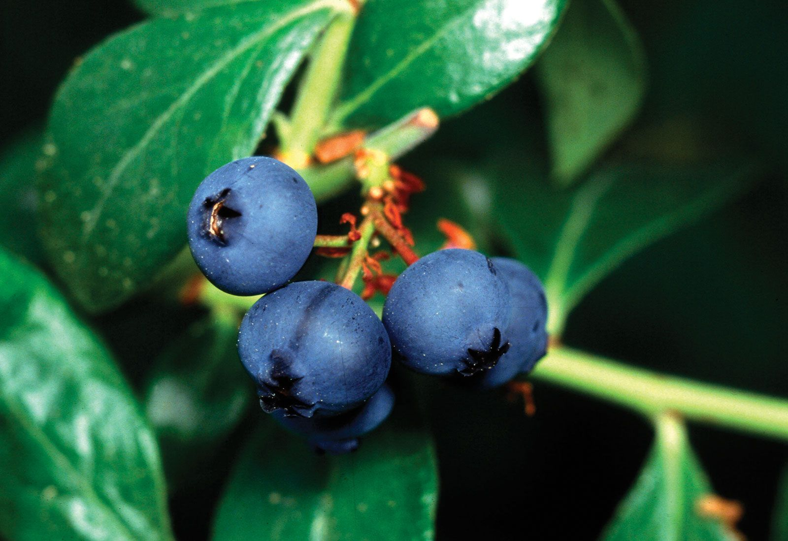

Flora
Alberi dominanti delle foreste emiboreali
Pino silvestre (Pinus sylvestris, lettone: “priede”)
Conifera pioniera delle dune e dei suoli sabbiosi interni. Tronco slanciato fino a 30–35 m, corteccia rosso-bruna in alto e grigio-aranciata a placche alla base; aghi in coppie, rigidi (4–7 cm), leggermente attorcigliati; coni ovoidali (3–7 cm). Forma pinete luminose con sottobosco di eriche e mirtilli. Fiorisce in maggio-giugno; coni maturi in 2 anni. Dove vederlo: pinete costiere di Jūrmala e Slītere, creste sabbiose interne di Gauja. Sicurezza: attenzione agli incendi di lettiera in estate secca.
Abete rosso (Picea abies, lettone: “egle”)
Conifera climax di suoli più freschi e umidi. Altezza 25–40 m; chioma conica densa; aghi quadrangolari (1–2.5 cm) di colore verde scuro, con punte acute; coni cilindrici penduli (10–18 cm). Sensibile al vento e agli stress idrici. Fornisce microhabitat per muschi e licheni barbuti. Dove vederlo: versanti ombrosi nelle valli di Gauja e Abava, boschi misti al nord-est.
Betulla bianca (Betula pendula, lettone: “bērzs”)
Tronco con corteccia bianca a lenticelle nere, rami penduli, foglie romboidali seghettate; 15–25 m. Specie pioniera su radure, post-glaciale e post-taglio; catene di funghi micorrizici molto ricche. In autunno crea folgoranti chiome dorate. Ampia in tutta la Lettonia. Ottimo punto per il birdwatching di pigliamosche e cince.
Quercia peduncolata (Quercus robur, lettone: “ozols”)
Monumento vivente dei suoli profondi e ben drenati; chioma espansa, foglie lobate con picciolo corto; ghiande con lungo peduncolo. Gli “antichi querci” dei boschi di Tērvete ospitano cavità per chirotteri, scarabei saproxilici e funghi lignicoli rari. In fioritura ad aprile-maggio; fruttificazione settembrina. Dove vederla: foreste antiche e parchi storici rurali.
Aliso nero (Alnus glutinosa, lettone: “alksnis”)
Dominatore delle aree umide e bordi di torbiere basse; foglie tonde smussate; frutti legnosi simili a piccole pigne. Radici con noduli azotofissatori che migliorano i suoli alluvionali. Facile da osservare lungo i corsi d’acqua della Daugava e nei canali di drenaggio agricolo.
Piante caratteristiche di torbiere e radure
Rosmarino di palude (Rhododendron tomentosum, sin. Ledum palustre; lettone: “vaivariņš”)
Arbusto sempreverde aromatico (50–120 cm), foglie lineari coriacee con tomento ferrugineo sul lato inferiore; fiori bianchi in corimbi a maggio-giugno. Tossico; attira impollinatori specialisti. Dove: torbiere alte di Ķemeri e Teiči.
Drosera a foglie rotonde (Drosera rotundifolia, lettone: “apaļlapu rasene”)
Pianta carnivora degli sfagni: rosette di 2–5 cm con foglie circolari ricoperte di ghiandole vischiose rosse; cattura insetti per integrare l’azoto. Fiori minuscoli bianchi in estate. Osservarla da passerelle per non danneggiare il cuscino di sfagni.
Sfagni (Sphagnum spp., lettone: “sfagni”)
Muschi costruttori di torba; trattengono fino a 20 volte il loro peso in acqua; creano microhabitat acidi (pH 3–4). Crescono apicalmente accumulando torba olocenica spessa metri. Indispensabili per la regolazione idrica e il sequestro di carbonio.
Andromeda di palude (Chamaedaphne calyculata, lettone: “andromeda”)
Arbusto basso di torbiera con foglie ellittiche coriacee e fiori campanulati bianco-rosati in aprile-maggio. Indicatore di torbiera alta matura.
Piante costiere e di duna
Ammofila delle dune (Ammophila arenaria, lettone: “ammofila”)
Graminacea consolidatrice di dune bianche; foglie rigide arrotolate, pannocchie erette; radici rizomatose che fissano la sabbia. Dove: Jūrmala, Pavilosta, Capo Kolka. Non calpestare i cordoni dunali.
Camarinia nera (Empetrum nigrum, lettone: “krauklenes”)
Suffrutice sempreverde con bacche nere lucide, fioritura primaverile; importante per uccelli e volpi. Su dune grigie e brughiere costiere.
Orchidee e prati baltici
Scarpetta di Venere (Cypripedium calceolus, lettone: “dzeltenā dzeguzenīte”)
Rara e protetta; fiore con labello giallo a “zoccolo” e sepali petaloidi porpora-bruni; fusti 20–60 cm. Fioritura in maggio-giugno in boschi calcarei luminosi. Vietata la raccolta. Dove: stazioni sparse in Gauja NP; necessaria discrezione e guida locale.
Dactylorhiza maculata agg. (lettone: “plankumainā dzegužpirkstīte”)
Spiga di fiori rosa maculati, foglie con punteggiature; prati umidi e margini di torbiera. Fiorisce giugno-luglio.
Arbusti e sottobosco commestibile

Mirtillo nero (Vaccinium myrtillus, lettone: “mellenes”)
Cespuglio basso, foglie verdi tenere, bacche blu-violacee con polpa scurente; fruttifica luglio-agosto. Habitat: pinete e abetine acide. Ottimo per escursioni di foraging responsabile.
Mirtillo rosso (Vaccinium vitis-idaea, lettone: “brūklenes”)
Sempreverde con foglie coriacee lucide, bacche rosso vivo in agosto-ottobre; brughiere e torbiere. Resiste a gelate precoci.
Funghi emblematici (con tabella di identificazione)
Porcino (Boletus edulis, lettone: “baravika”)
Cappello bruno (5–20 cm), pori bianchi poi verdastri, gambo tozzo reticolato chiaro; carne soda, odore di nocciola. Pinete e betulleto da luglio a ottobre. Evitare raccolta in aree protette core.

Finferlo (Cantharellus cibarius, lettone: “gailene”)
Giallo uovo, margine ondulato, pieghe anastomizzate al posto delle lamelle; profumo fruttato. In pinete aerate da giugno a settembre.
Falsa spugnola (Gyromitra esculenta, lettone: “pavasara ķēve”) – tossica
Cappello cerebriforme bruno cioccolato, primaverile su sabbie di pino; contiene giromitrina (potenzialmente letale). Non consumare.
Tignosa verdognola (Amanita phalloides, lettone: “zaļā mušmire”) – mortale
Cappello verdastro-olivastro, volva bianca sacciforme, anello sul gambo; lamelle bianche. Boschi misti; rischio massimo di confusione con commestibili.
Tabella di identificazione funghi (esempi e sosia pericolosi):
| Specie | Cappello | Imenio | Gambo/Volva | Odore | Habitat | Sosia pericolosi | Note sicurezza |
|---|---|---|---|---|---|---|---|
| Boletus edulis | Bruno, 5–20 cm | Pori bianchi→verdi | Gambo reticolato, no volva | Nocciolato | Pinete/betulle | Tylopilus felleus (amaro, non tossico) | Evitare esemplari spugnosi e contaminati |
| Cantharellus cibarius | Giallo, margine ondulato | Pliche spesse | Gambo pieno, senza volva | Albicocca | Pinete | Omphalotus olearius (non presente in foreste nordiche) | Le pliche non si staccano come lamelle |
| Gyromitra esculenta | Cerebriforme bruno | Superficie cerebrale | Cavo, senza volva | Debole | Sabbie di pino (primavera) | Morchella spp. (commestibili) | Gyromitrina: rischio epatico/neurologico |
| Amanita phalloides | Verde oliva | Lamelle bianche | Volva e anello bianchi | Dolce, miele | Boschi misti | Russula/Tricholoma chiari | Non raccogliere amanite senza competenza |
Tabella di identificazione bacche comuni:
| Specie | Foglie | Frutto | Periodo | Habitat | Sosia pericolosi | Note |
|---|---|---|---|---|---|---|
| Vaccinium myrtillus | Verdi, tenere, dentate | Bacca blu-nera, polpa viola | Lug–Ago | Pinete/abetine | Bacche ornamentali bluastre | Macchia la lingua di viola intenso |
| Vaccinium vitis-idaea | Sempreverdi, lucide | Bacca rossa, acidula | Ago–Ott | Torbiere/brughiere | Daphne mezereum (bacche rosse tossiche su rami legnosi) | Valutare foglie coriacee tipiche |
| Rubus idaeus | Foglie composte, pagina inferiore bianca | Lampone rosso | Lug–Ago | Margini forestali | Solanum dulcamara (bacche rosse lucide tossiche) | I lamponi sono aggregati e cavi |
| Empetrum nigrum | Aghi minuti, sempreverdi | Bacca nera | Ago–Set | Dune/brughiere | Bacche di Ligustro (tossiche) | Evitare raccolta lungo strade saline |
| Rubus chamaemorus (camemoro) | Foglia peltata lobata | Bacca ambra | Giu–Lug | Torbiere nordiche | Fragaria immatura (non tossica) | In Lettonia raro: non raccogliere in riserve |
Consigli pratici foraging: in Lettonia la raccolta per uso personale è generalmente consentita fuori dalle aree con divieti specifici; usare cestino, non sacchetti; identificazione certa al 100% prima dell’assaggio; attenzione a zecche e orsi di formiche.